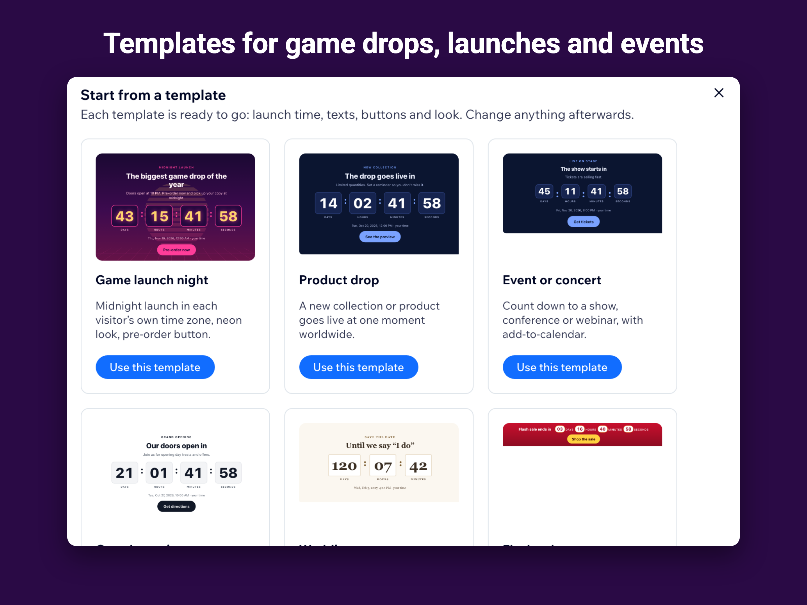
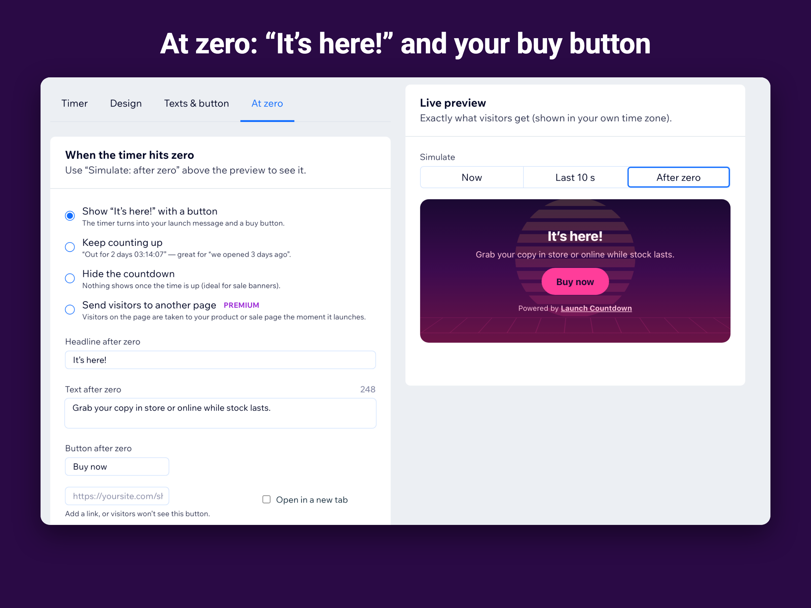

How to add a countdown timer to a Wix site
A countdown makes a date feel real. Here is how to put one on a Wix page with Launch Countdown, and how to choose the right kind of timer.
1. Install the app and pick a template
Install Launch Countdown from the Wix App Market. The dashboard opens with a ready-made “Game launch night” countdown; you can also start from a product drop, an event or concert, a grand opening or a wedding template.

2. Choose the kind of launch time
One moment worldwide suits live streams, webinars and sales that end at a fixed time: everyone counts down to the same instant, and visitors see the date in their own time. Local time for every visitor suits releases that unlock at midnight in each country. A daily timer suits shipping cut-offs, and a personal timer suits a time-limited welcome offer.
3. Decide what happens at zero
Most launches should flip to a short message and a buy button. Sales usually hide the timer, openings can count up (“open for 3 days”), and a drop can send visitors straight to the product page.

4. Place the widget and publish
In the Wix editor click Add Elements, then Apps, drag Launch Countdown onto the page, choose your countdown in its settings and publish. Use “Simulate: last 10 s” in the dashboard preview to check the launch moment before the real day.
Questions
Can I show several countdowns?
Yes. Each countdown can sit on any number of pages; Premium allows more live countdowns at once.
Does it slow down my site?
The widget is small, uses no third-party scripts and draws the timer in the visitor’s browser.
See it in the Wix App Market